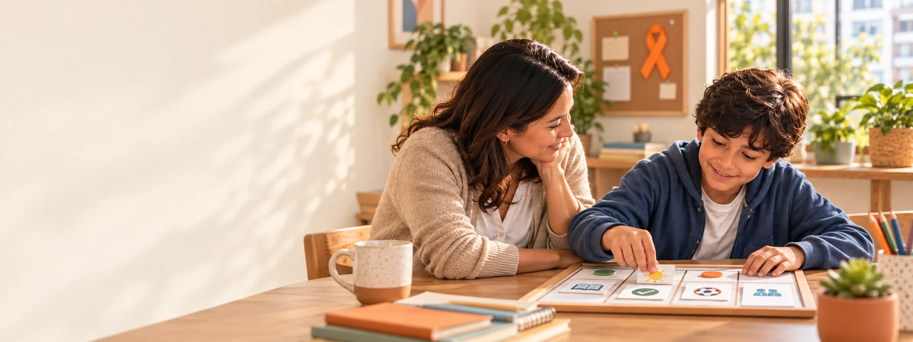
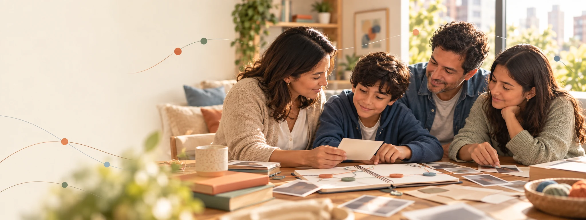
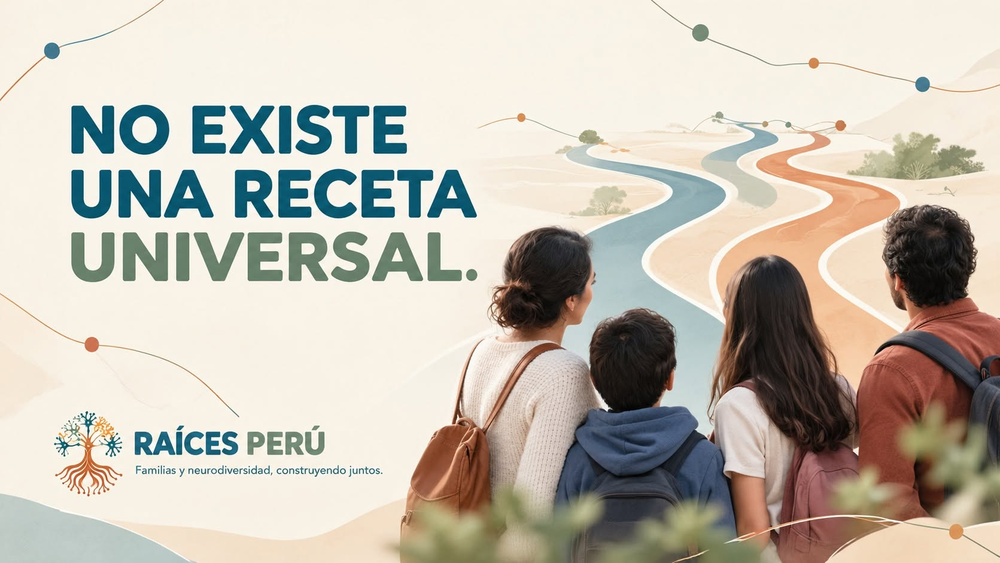

🧡
Comprender el TDAH para acompañar mejor
Datos del Perú, evaluación oportuna y una mirada que reconoce las dificultades sin reducir a la persona a un diagnóstico.
Leer el artículo RAÍCES PERÚFamilias y neurodiversidad
RAÍCES PERÚFamilias y neurodiversidadBlog Raíces
Un espacio para compartir el origen, las decisiones y las ideas que dan forma a Raíces, diferenciando siempre experiencia, reflexión e información verificable.



Antes que una etiqueta, existe una vida con historia, relaciones, necesidades y posibilidades.

Las mejores preguntas aparecen cuando diferentes miradas pueden encontrarse sin imponerse.
Raíces representa sostén, caminos posibles, vínculos y una comunidad que aprende.
Calendario neurodiverso

Datos del Perú, evaluación oportuna y una mirada que reconoce las dificultades sin reducir a la persona a un diagnóstico.
Leer el artículoHistorias fundacionales
De una experiencia familiar atravesada por información fragmentada nació una práctica: escuchar, estudiar, ordenar y construir puentes.
Leer la historia
Las raíces representan aquello que sostiene antes de que una persona pueda desplegar sus propios caminos.
Conocer el significado
No elegimos un árbol que resiste solo, sino la imagen de un ecosistema que ayuda a crear condiciones para la vida.
Descubrir la inspiración